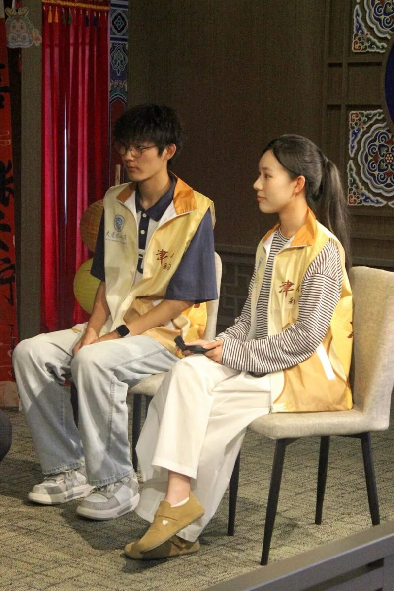
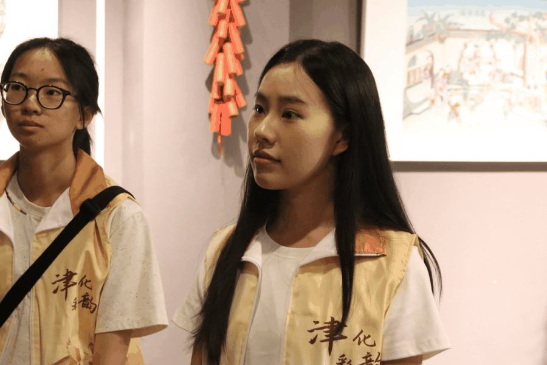
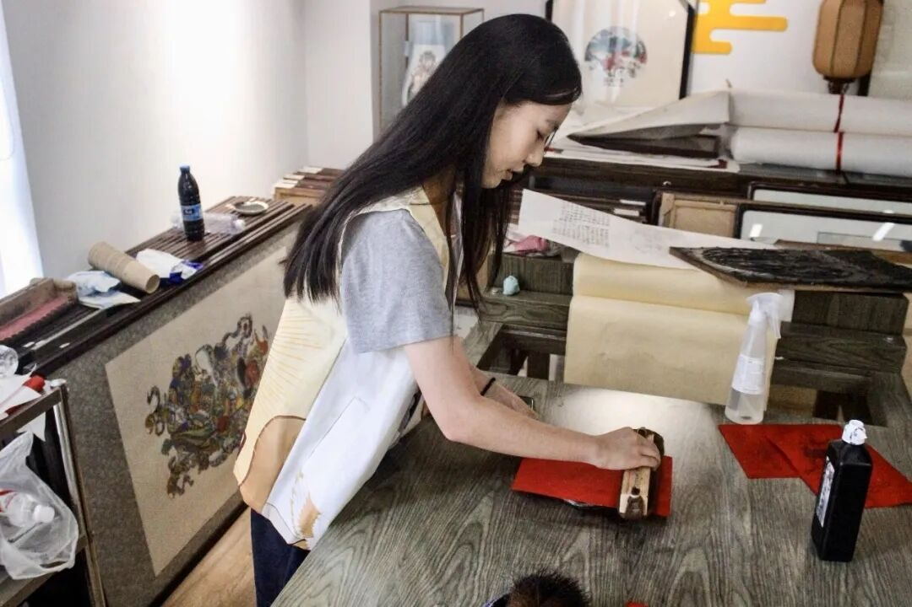
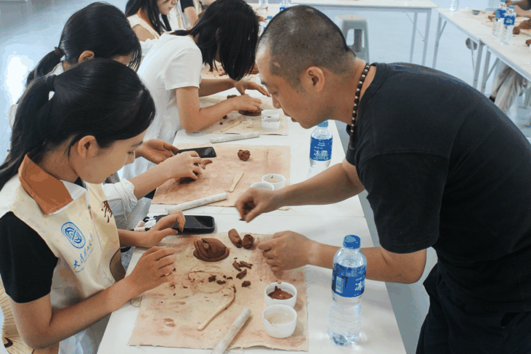
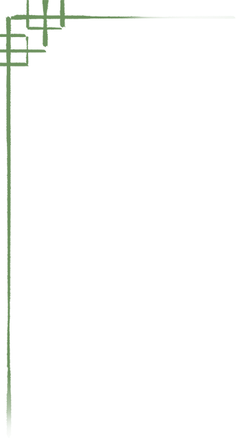
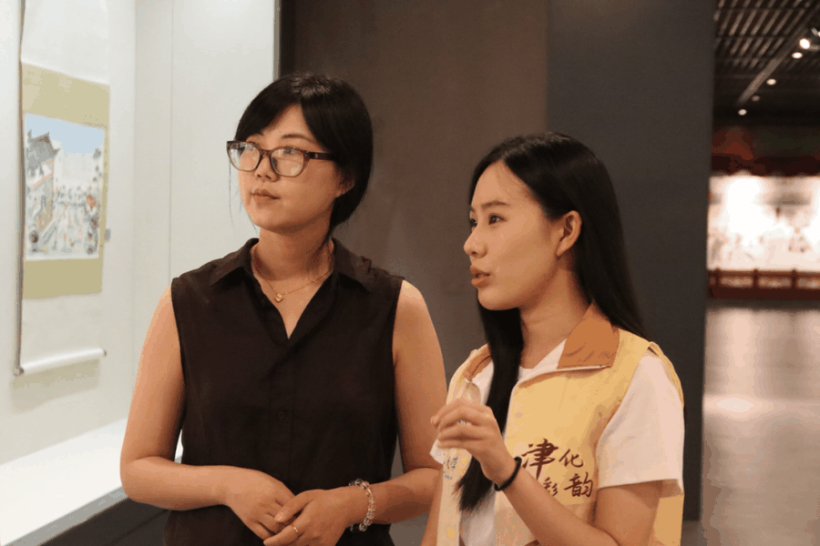
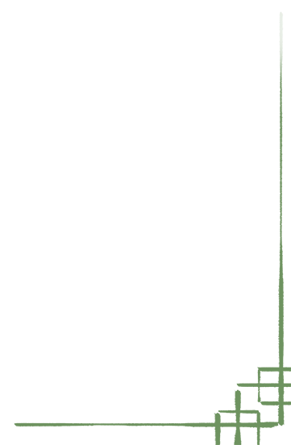

【行者无疆·津彩化韵】个人实践感悟——齐子涵
第一次跟着行者无疆实践团走在天津的街头，我才发现，原来这座从小长大的城市里，藏着那么多我不认识的模样。


出发前，作为外联采访组的一员，我对着名单上的非遗传承人犯了难。有些知名非遗项目的传承人还好找，可掐丝珐琅、葫芦烙画的手艺人，连个公开的联系方式都难寻。我翻遍了短视频平台，在模糊的镜头里找线索，甚至在几条几年前的评论区里蹲守，靠着一句句询问与这些传承人牵上了线。现在想起那些对着屏幕发呆的夜晚，都成了特别的回忆。
行者无疆

第一次举着话筒采访时，我的手一直在抖。可当听到传承人说“现在年轻人愿意学，就是好事”，看到葫芦烙画的房老师手机里存的的比赛的照片，那些紧张突然就没了。他们讲起非遗的机遇——短视频让更多人看到了手艺，今年天津作为达沃斯经济论坛、上合峰会的东道主，推动更多非遗走向了国际；也聊起了挑战——传统纹样怎么跟上现在的审美，话里的真诚比任何资料都动人。


最难忘的是亲手尝试的时刻。捏泥塑时，冰凉的泥在手里慢慢成形，指腹的温度渗进去，指纹清清楚楚地留在上面。那一刻突然觉得，我和这些传承了几百年的手艺，有了实实在在的联系。烙画时手一抖，烫出个歪歪扭扭的圆点，旁边的房老师笑着说“这才是独一份的”，原来不完美也是非遗的一部分。


这些天走的路，很多是我走过许多次的路口，可跟着大家拐进胡同深处，看杨柳青年画的颜料在阳光下发亮，听面塑工具碰撞的叮当声，才发现那些熟悉的街景里，藏着那么多没被我留意的美丽。

实践结束那天，我走在海河边，风里都是熟悉的味道。这趟旅程让我明白，所谓非遗，不只是博物馆里的展品，更是手艺人掌心的温度，是藏在城市褶皱里的故事。



这是一次既踏实又奇妙的经历。手里的泥痕早已洗去，但有些东西好像留下了。期待下次，我还能跟着行者无疆的旗帜，去更多地方，听更多这样的故事。
行者无疆
来源 | 行者无疆实践团
图片 | 行者无疆实践团
文字 | 齐子涵
编辑 | 刘辰锡
审核 | 李凌志 杩健辉 张瑶琪
责编 | 邹靓靓 周 亮